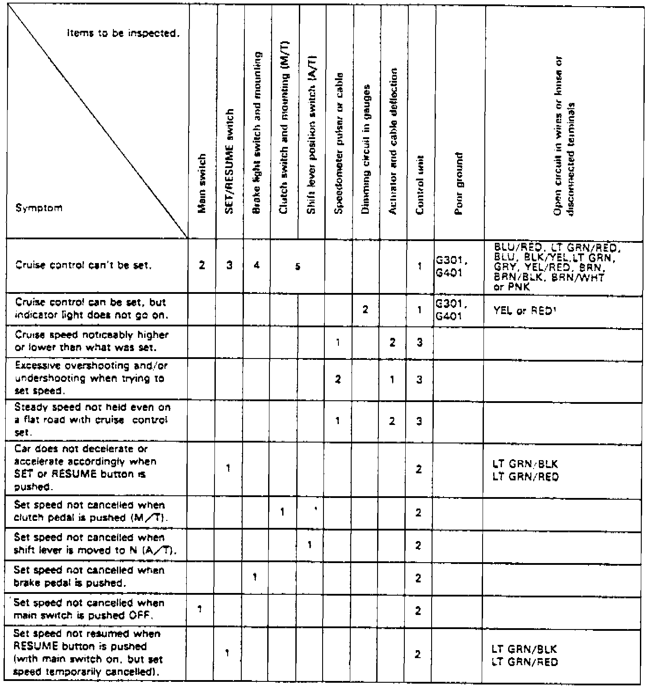
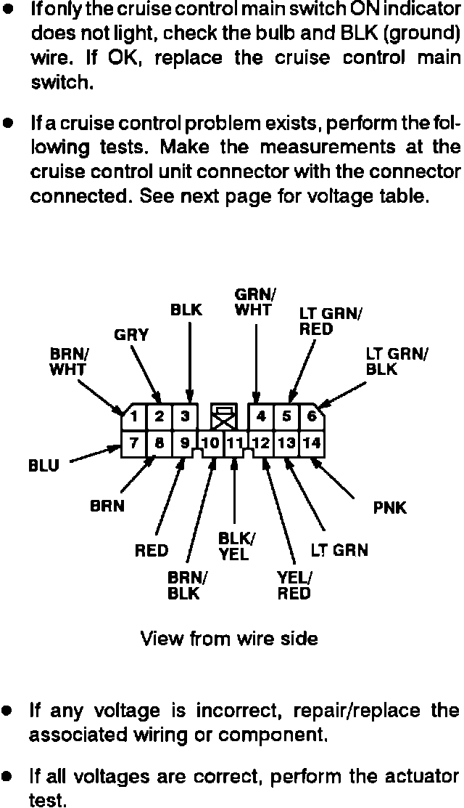
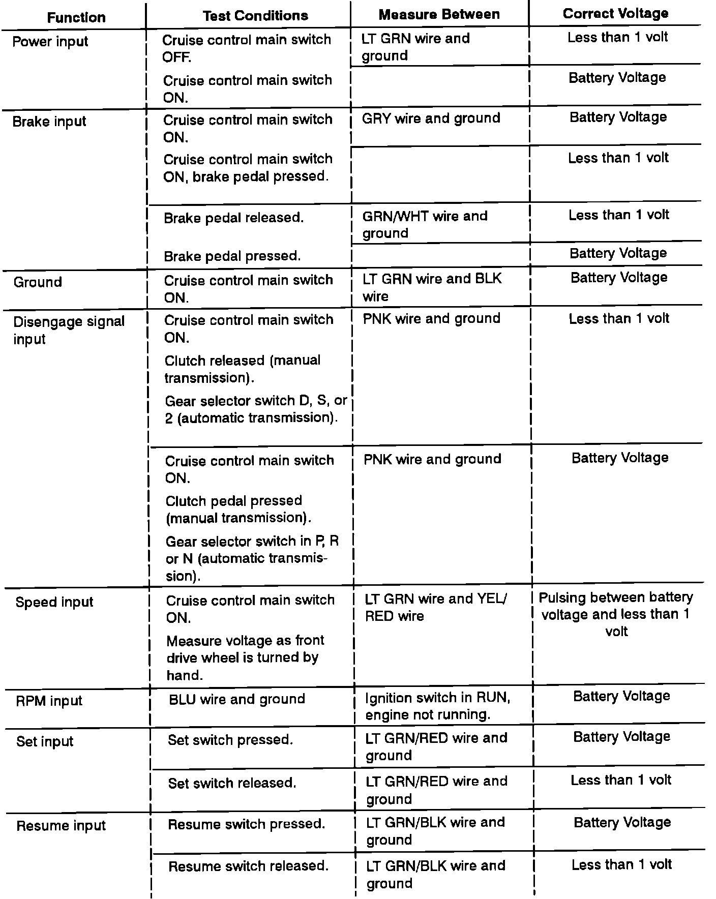
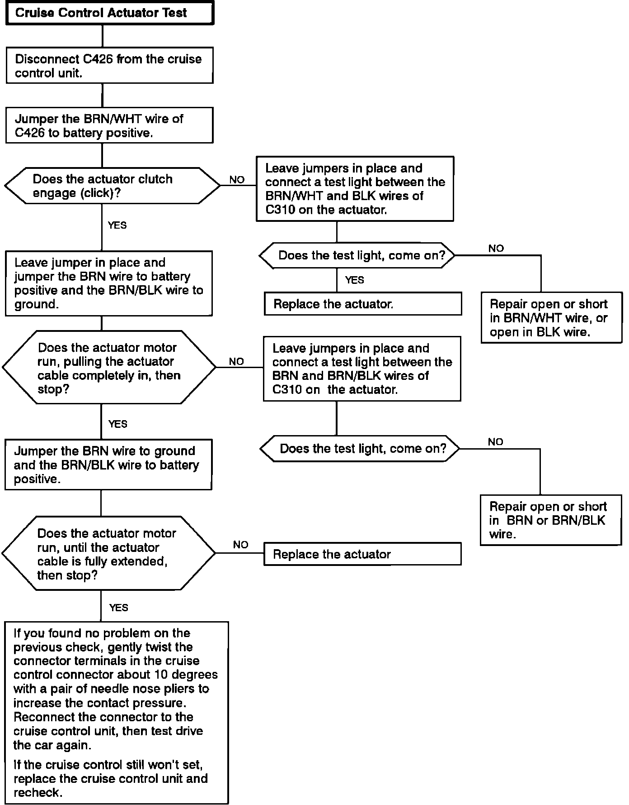

Symptom Related Diagnostic Procedures
Fig. 1 Troubleshooting Chart:

Refer to Fig. 1 when troubleshooting speed control system. The numbers in chart grid indicate troubleshooting sequence.
Before troubleshooting, check fuses 3, 4 and 9 in fuse panel, then sound the horn and check tachometer for proper operation.
Testing
Cruise Control Troubleshooting:

Cruise Control Troubleshooting:

Cruise Control Troubleshooting:
